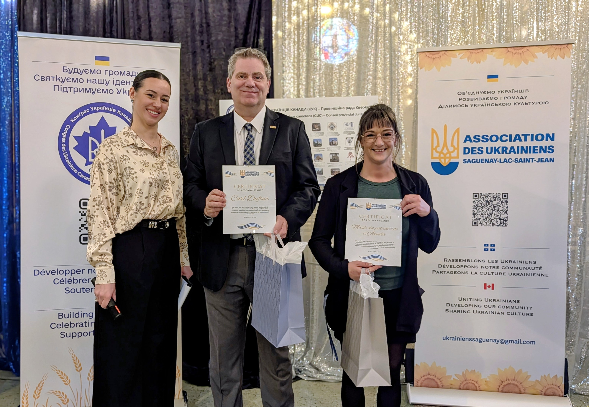

À proposПро насAbout
Une communauté qui choisit de s'enraciner.
Спільнота, що обирає укорінення.
A community that chooses to take root.
Fondée par des familles ukrainiennes installées au Saguenay–Lac-Saint-Jean, l'Association est née d'une gratitude profonde envers la région qui les a accueillies — et d'un désir de participer activement à la vie locale.
Заснована українськими сім'ями, що оселилися у Saguenay–Lac-Saint-Jean, Асоціація виникла з глибокої вдячності до регіону, який їх прийняв, — і з бажання активно брати участь у місцевому житті.
Founded by Ukrainian families settled in Saguenay–Lac-Saint-Jean, the Association was born from deep gratitude toward the region that welcomed them — and from a desire to actively participate in local life.
Au cours des trois dernières années, de nombreuses familles ukrainiennes sont arrivées au Saguenay–Lac-Saint-Jean fuyant la guerre. Elles ont trouvé ici un accueil chaleureux, une communauté bienveillante, un nouveau départ. Aujourd'hui, elles sont bien intégrées — elles travaillent, leurs enfants vont à l'école, elles contribuent à l'économie régionale.
Впродовж останніх трьох років багато українських родин прибули до Saguenay–Lac-Saint-Jean, рятуючись від війни. Тут вони знайшли теплий прийом, доброзичливу спільноту, новий початок. Сьогодні вони добре інтегровані — працюють, їхні діти ходять до школи, вони вносять свій вклад в економіку регіону.
Over the past three years, many Ukrainian families arrived in Saguenay–Lac-Saint-Jean fleeing the war. They found here a warm welcome, a caring community, a new beginning. Today, they are well integrated — working, their children attending school, contributing to the regional economy.
L'Association n'est pas une simple organisation culturelle. C'est un cercle de personnes qui se soutiennent mutuellement, qui construisent ensemble une vie ukrainienne à Saguenay, et qui représentent leur communauté auprès des autorités locales et des institutions québécoises. Nous ne sommes pas simplement ici — nous participons.
Асоціація — це не просто культурна організація. Це коло людей, які підтримують одне одного, разом будують українське життя в Saguenay і представляють свою спільноту перед місцевими органами влади та квебекськими інституціями. Ми не просто тут — ми беремо участь.
The Association is not a simple cultural organization. It is a circle of people who support each other, who together build a Ukrainian life in Saguenay, and who represent their community to local authorities and Quebec institutions. We are not just here — we participate.
